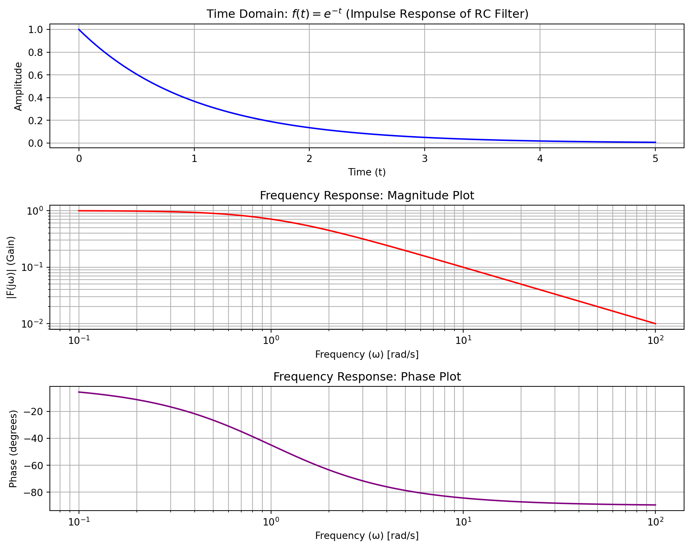

Code
import sympy as sp
import numpy as np
import matplotlib.pyplot as plt
# --- 1. Define symbols ---
t, s, w = sp.symbols('t s w', real=True, positive=True)
a = sp.Symbol('a', real=True, positive=True)
# --- 2. Define the function ---
f = sp.exp(-a*t)
# --- 3. Compute Laplace Transform ---
F_s = sp.laplace_transform(f, t, s, noconds=True)
# --- Set parameter for our specific case ---
f_case = f.subs(a, 1)
F_s_case = F_s.subs(a, 1)
# --- 4. Derive Frequency Response ---
F_jw = F_s_case.subs(s, 1j * w)
# --- Print the symbolic results ---
print(f"Function: f(t) = {f_case}")
print(f"Laplace Transform: F(s) = {F_s_case}")
print(f"Frequency Response: F(jω) = {F_jw}")
# --- 5. Lambdify for numerical evaluation ---
f_func = sp.lambdify(t, f_case, 'numpy')
F_jw_func = sp.lambdify(w, F_jw, 'numpy')
# --- 6. & 7. Generate Data and Calculate Mag/Phase ---
t_values = np.linspace(0, 5, 400)
f_values = f_func(t_values)
w_values = np.logspace(-1, 2, 400) # From 0.1 to 100 rad/s
F_jw_values = F_jw_func(w_values)
magnitude = np.abs(F_jw_values)
phase = np.angle(F_jw_values, deg=True)
# --- 8. Plotting ---
plt.figure(figsize=(10, 8))
# Plot f(t)
plt.subplot(3, 1, 1)
plt.plot(t_values, f_values, color='blue')
plt.title('Time Domain: $f(t) = e^{-t}$ (Impulse Response of RC Filter)')
plt.xlabel('Time (t)')
plt.ylabel('Amplitude')
plt.grid(True)
# Plot Magnitude |F(jω)|
plt.subplot(3, 1, 2)
plt.loglog(w_values, magnitude, color='red')
plt.title('Frequency Response: Magnitude Plot')
plt.xlabel('Frequency (ω) [rad/s]')
plt.ylabel('|F(jω)| (Gain)')
plt.grid(True, which="both", ls="-")
# Plot Phase arg(F(jω))
plt.subplot(3, 1, 3)
plt.semilogx(w_values, phase, color='purple')
plt.title('Frequency Response: Phase Plot')
plt.xlabel('Frequency (ω) [rad/s]')
plt.ylabel('Phase (degrees)')
plt.grid(True, which="both", ls="-")
plt.tight_layout()
plt.show()Function: f(t) = exp(-t)
Laplace Transform: F(s) = 1/(s + 1)
Frequency Response: F(jω) = 1/(1.0*I*w + 1)
